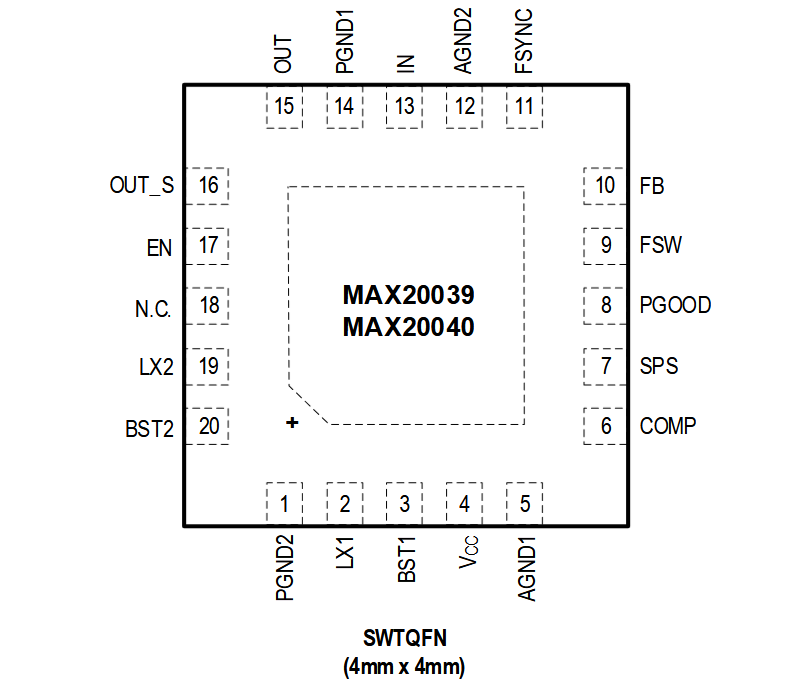

MAX20039/MAX20040

Pin Description
| PIN | NAME | FUNCTION |
|---|---|---|
| 1 | PGND2 | Ground Reference for the Boost Low-Side Integrated FETs |
| 2 | LX1 | IN to PGND Switching Node |
| 3 | BST1 | Bootstrap Capacitor for High-Side Driver of LX1 Node. Connect a 100nF capacitor between BST1 and LX1. |
| 4 | VCC | Linear Regulator Output. VCC powers up the internal circuitry. Bypass with 2.2μF ceramic capacitor to AGND. |
| 5 | AGND1 | Analog Ground of the IC. Connect to ground-plane reference of the PCB. |
| 6 | COMP | External Compensation. Connect the External Compensation Network of the Loop. |
| 7 | SPS | Spread-Spectrum Enable/Disable Pin. Pull high for spread spectrum on and low for spread spectrum off. |
| 8 | PGOOD | Open-Drain Output, Active-High Power-Good Indicator. PGOOD asserts when VOUT is above 96% of regulation point. PGOOD goes low when VOUT is below 93% of regulation point. |
| 9 | FSW | Internal-Oscillator Pin for Setting the Switching-Frequency. Connect a resistor to ground to set the desired frequency. |
| 10 | FB | Feedback Analog Input. Connect an external resistive divider from OUT to FB and AGND to set the desired output voltage. Connect to VCC to set the output voltage to 5V. |
| 11 | FSYNC | Synchronization Input. Connect to AGND to enable skip mode of operation during light load. Connect to VCC to force PWM mode during light-load operation. FSYNC has a 1MΩ internal pull-down. |
| 12 | AGND2 | Analog Ground Reference |
| 13 | IN | Voltage-Supply Input. IN powers the internal voltage regulator. Bypass IN to PGND with a 4.7μF (min) ceramic capacitor. |
| 14 | PGND1 | Ground Reference for the Buck Low-Side Integrated FETs |
| 15 | OUT | Switching-Regulator Voltage Output |
| 16 | OUT_S | Regulator Voltage-Sense Input |
| 17 | EN | High Voltage-Enable Input |
| 18 | N.C. | No Connection. Not internally connected to any circuitry. |
| 19 | LX2 | OUT to PGND Switching Output Node |
| 20 | BST2 | Bootstrap Capacitor for High-Side Driver of the LX2 Node. Connect a 100nF from BST2 to LX2. |
| - | EP | Exposed Pad |